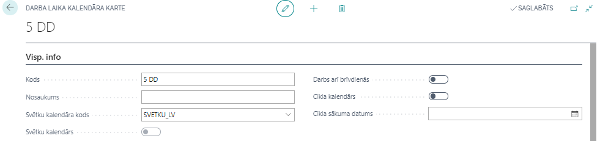
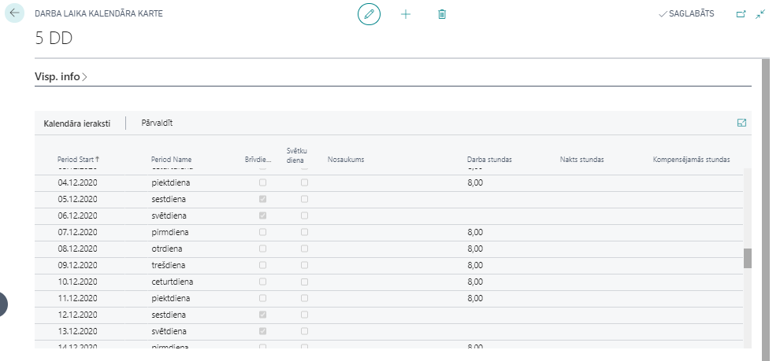
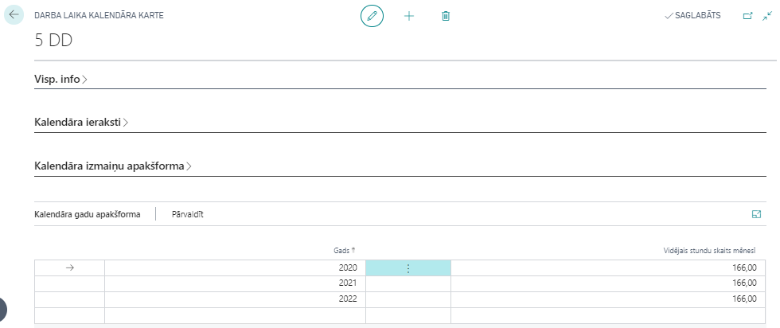
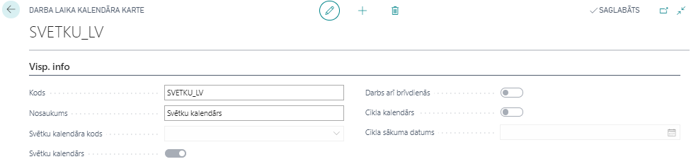
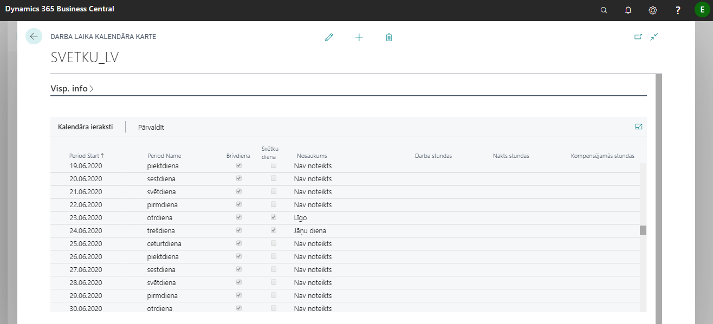
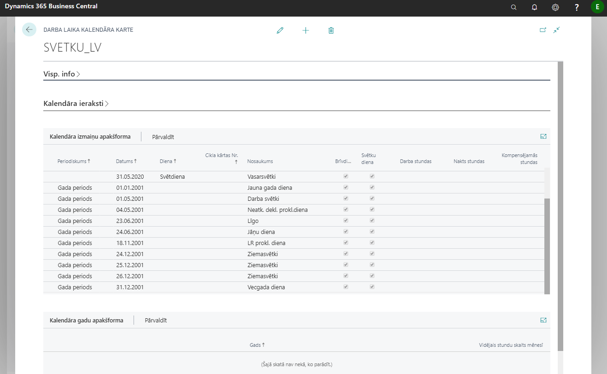

Darba laika kalendāri
Kalendārs ir visu aprēķinu pamatā. Katrai darbinieka amata kartei ir jāpievieno darba laika kalendāra kods. Kalendārs tiek izmantots darba dienu un stundu aprēķinos, kā arī, lai aprēķinātu plānotās darba dienas un stundas mēnesī, ko izmanto prombūtņu aprēķinos.
Katram kalendāram ir sava kartiņa. Darba laiku kalendāru kartiņas apkopotas sarakstā Darba laika kalendāri. Ar konfigurācijas pakotni tiek importēti vairāki standarta kalendāru veidi. Lietotājs var izveidot papildus kalendārus atkarībā no uzņēmuma vajadzībām. Darba dienām, kurām atšķiras darba stundas (piemēram, pirmssvētku dienas) nepieciešams kalendāros papildināt manuāli ik gadu.
Veidojot jaunu darba laika kalendāra kartiņu, iestatījumiem pieejami sekojoši lauki:
Cilne: Visp. info

| Lauka nosaukums | Apraksts |
|---|---|
| Kods | Brīvi definēts kods. |
| Nosaukums | Brīvi izvēlēts nosaukums. |
| Svētku kalendāra kods | Svētku kalendārs, kas ir piesaistīts konkrētam darba laika kalendāram. |
| Svētku kalendārs | Atzīme, ka šis kalendārs ir svētku kalendārs (tikai svētku kalendāriem). |
| Darbs arī brīvdienās | Atzīmē, ka darbinieki strādā arī brīvdienās. |
| Cikla kalendārs | Atzīme, ja darba laika kalendārs ir veidots kā cikla kalendārs. |
| Cikla sākuma datums | Nodefinē cikla kalendāra pirmo dienu. |
Cilne: Kalendāra ieraksti

Kalendāra ierakstos tiek atspoguļota informācija par katru dienu, ņemot vērā piesaistīto svētku dienu kalendāru. Ja pamata kalendāram virsrakstā ir norādīts Svētku kalendārs, tad visas svētku dienas attiecas arī uz šo kalendāru. Īpašas izmaiņas var izdarīt katrā kalendārā atsevišķi - pārcelt konkrētas darba dienas, saīsināt pirmssvētku dienu stundas, norādot konkrētus datumus. Gadījumā, ja vajadzētu kompensēt svētku dienu, kura iekrīt normālajā darba nedēļā, šo informāciju var reģistrēt cilnē Kalendāra izmaiņu apakšforma.
Cilne: Kalendāra izmaiņu apakšforma

| Lauka nosaukums | Apraksts |
|---|---|
| Periodiskums | Gada periods (parasti izmanto svētku kalendāriem), Nedēļas periods vai Cikls. |
| Datums | Ja nepieciešams, norāda konkrētu datumu (parasti izmanto svētku kalendāriem). |
| Diena | Norāda nedēļas dienas nosaukumu. |
| Cikla kārtas numurs | Ja periodiskums ir Cikls, tad norāda cikla kārtas Nr. |
| Nosaukums | Brīvi izvēlēts apraksts. |
| Brīvdiena | Atzīme, vai konkrētā diena ir brīvdiena. |
| Svētku diena | Atzīme, vai konkrētā diena ir svētku diena. |
Gadījumā, ja svētku diena pārcelta uz citu dienu (piemēram, 18. novembris vai 4. maijs), tad šai informācijai jābūt ievadītai darba laika kalendārā ar tipu Brīvdiena un kompensējamām stundām.
Cilne: Kalendāra gadu apakšforma

Tiek noradīts gads un vidējais stundu skaits mēnesī gadījumam, ja darbiniekam ir summētais darba laiks un pamatalga proporcionāli stundām, tiek ņemts vērā vidējais stundu skaits mēnesī stundas likmes aprēķinam. Šī likme tiek izmantota nakts stundām, virsstundām, svētku stundām, svētku dienu/stundu kompensācijām.
Svētku dienu kalendāri
Sistēmas standarta pakotnē ir izveidots standarta svētku kalendārs ar jau iestatītām svētku dienām, kas atkārtojas katru gadu vienā un tai pašā datumā (piem.: Ziemassvētki, Jāņi, utt.). Svētku dienas, kuras neatkārtojas vienā un tai pašā datumā (piem.: Lieldienas, Mātes diena, Vasarsvētki, kā arī, pārceltās svētku dienas), ir jāpapildina manuāli katru gadu.
Cilne: Visp. info
Tiek aizpildīti tikai lauki Kods un Nosaukums, kā arī ielikta pazīme Svētku kalendārs . Pārējie šīs cilnes lauki ir neaktīvi, un sistēma tos aizpilda pati.

Cilne: Kalendāra ieraksti

Cilne: Kalendāra izmaiņu apakšforma
Ja svētku dienas atkārtojas ik gadu vienos un tajos pašos datumos, tad periodiskumu izvēlas Gada periods un saliek attiecīgos uzstādījumus. Ja svētku dienas neatkārtojas ik gadu vienos un tajos pašos datumos, tad lauku periodiskums atstāj tukšu.
